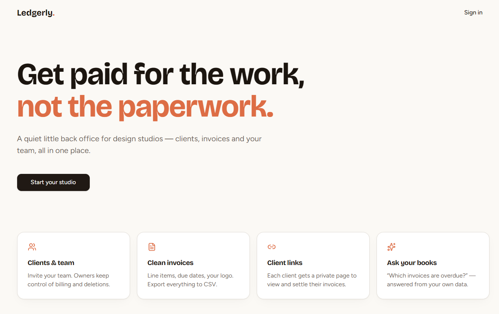
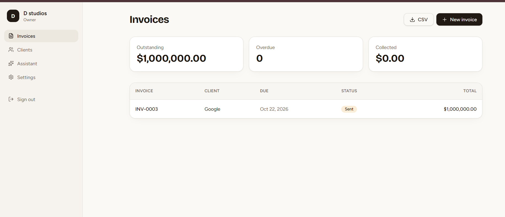
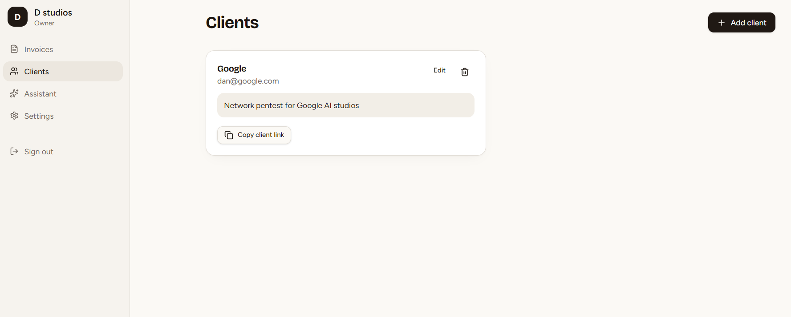
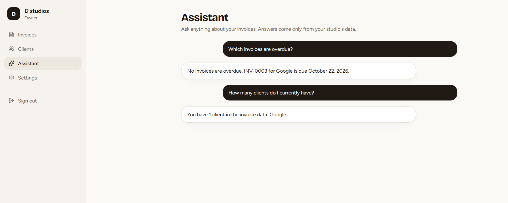

A lot of real products are being shipped straight out of AI app builders now, with very little security review before they reach users. I wanted to know what a proper assessment of one actually looks like — so I built a small invoicing SaaS on Lovable, branded it as "Ledgerly," and attacked it like a client engagement.

StudioDesk (live as Ledgerly) is a multi-workspace invoicing and client-management app I built as the target itself — on Lovable, which generates a React front end and provisions a managed Supabase/PostgreSQL backend exposed through PostgREST. It supports multiple workspaces per account, workspace roles, client records, invoices, shareable client-portal links, and invitations — enough of a real authorization surface to actually be worth testing.


I split the assessment into two parts on purpose, the way I would for a client: an automated baseline first, then manual testing second. Automated tooling is fast and consistent at catching known patterns — leaked secrets, outdated dependencies, schema violations — but it can't reason about who should be allowed to see or touch whose data. That judgment needs a human, which is what Part 2 is for.
Seven tools, run against both the client bundle and the live REST API. The API's own OpenAPI schema is generated at runtime by PostgREST, so I pulled it straight from the live backend and used it to drive Schemathesis rather than guessing at the API surface by hand.
| Tool | Purpose | Result |
|---|---|---|
| Semgrep | Static code-pattern analysis | 7 low-confidence hits, all in vendored third-party code |
| Gitleaks | Secret scanning (source) | 0 findings |
| Trivy | Vulnerable dependencies & misconfig | 0 findings |
| TruffleHog | Verified, live-secret detection | 0 verified secrets |
| Nuclei | Known CVEs & misconfigurations | 0 matches (19-min scan) |
| Custom frontend grep | Exposed keys in client-served files | 0 findings |
| Schemathesis | Schema-driven API fuzzing | 1,272 test cases, 84 edge-cases triaged |
No high- or critical-severity issues came out of the automated pass. The most interesting result was actually a positive control: Schemathesis's fuzzer threw an anonymous, unauthenticated write at the invoice_items table using only the public anon key — and Postgres Row-Level Security correctly rejected it with a 401. That's a deliberate policy doing its job, not a vulnerability, and it's worth including precisely because it shows the baseline wasn't just "nothing broke" — something was actually standing guard.
| Finding | Severity | Status |
|---|---|---|
| Row-Level Security enforcement (anonymous write blocked) | Positive control | Confirmed working |
| Semgrep matches in vendored JS | Low / Info | No first-party code affected |
| TRACE method missing Allow header (8 endpoints) | Low (hygiene) | Carried into Part 2 |
accept_invitations RPC accepts empty-body POST | Low / Info | Flagged for manual verification |
This is where the real work is. Automated tools can't tell you whether workspace B can see workspace A's invoices, or whether the app's AI assistant feature can be steered into doing something it shouldn't through a crafted prompt. That's cross-workspace authorization testing, business-logic abuse cases, session handling, and prompt-injection testing against the AI assistant — all done by hand, the same way I'd approach any client engagement.

That Assistant panel is a good example of why Part 2 exists at all: an automated scanner has no way to know that feature is there, let alone try to talk it into leaking another workspace's invoices or ignoring its own instructions. That's a manual, adversarial, one-prompt-at-a-time job.
Why I built this: AI app builders are shipping real, deployed products every day, often with no security review at all before real users touch them. That gap — between "it works" and "it's actually safe" — is exactly where I want to specialize.